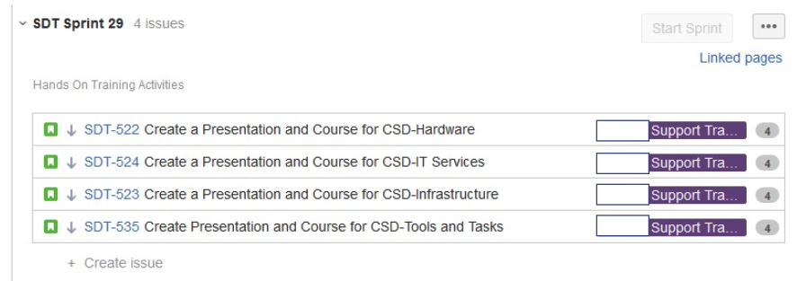
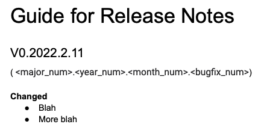

Product Design / Management Artifacts
Research > Requirements > User Stories > Retros > Iteration
The first step in Product Management is research. What do the users actually need? This research is conducted via informal interviews/requirements
gathering, asking "What is it you're trying to do here?"
It may involve being on-site in their environment and observing them as they attempt to accomplish a specific task with a specific tool.
It may involve discussions with their supervisors to determine what is needed.
Needs Assessment
This slide deck was presented to the organization, after some initial interviews with supervisors regarding their training needs for their staff.
Needs Assessment Presentation PDF
This documented was created after some initial interviews with all possible users (both FM and TV) regarding their use of the CD Library.
CD Library Needs Assessment PDF
Product Requirements
Once the needs assessment has been completed, the next step is defining a Product Requirements Document. This document gets handed off to the development team / Product Owner to use to create better user stories for the sprints.
This was for New Horizons Computer learning Center, when desktop scanners were still widely purchased. I had repeated requests for a scanner class and it did not exist in the Bew Horizons ecosystem. I created the class, baseed on the questions my students were asking me.
This documented was created after I bought the same book twice in four months, in addition to buying the first edition of a book where I already owned the 2nd edition copy.
Product Requirements for Library Book Lending System (LBLS) PDF
Scheduling the Work
This is a screenshot of the next two sprints for that time period, using Jira.
This is a guide for how we will do release notes / versions.
The Retro
This is a document for the questions to ask of all the team members at the sprint retro.
Iteration
This is a feature request for the dev team for a Non-Revenue use case.
Non-Revenue Badge Feature Request PDF
This is a feature request for the dev team for a Payment use case for split payments ast a Cashier Terminal.